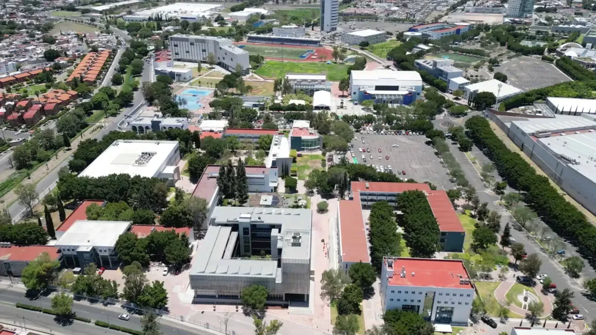
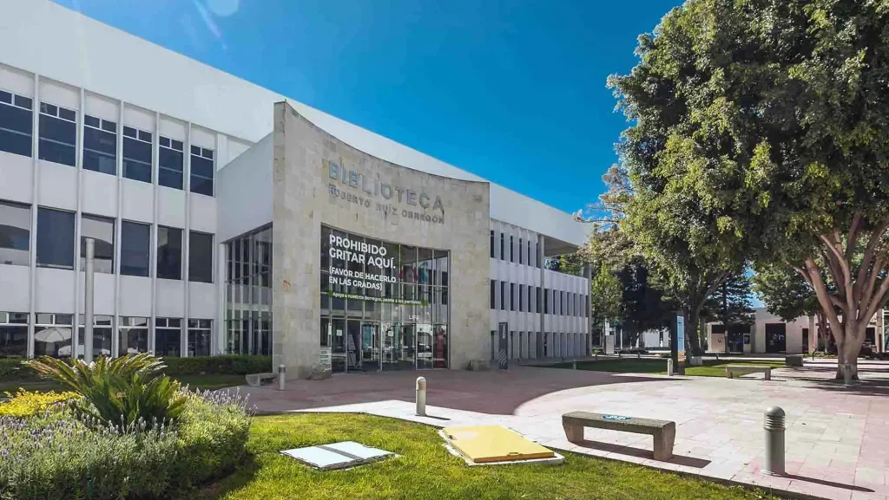

Día de la Producción Musical 2026
Un día de charlas, talleres y concurso de mezcla con gente que trabaja en la industria.

Charlas y talleres
Productores e ingenieros cuentan cómo trabajan, y algunos lo enseñan en taller el mismo día.
Concurso de mezcla
Dos categorías, una para licenciatura y otra para preparatoria. Todos reciben el mismo multitrack y cada quien lo mezcla por su cuenta.
Sesión de grabación en vivo
Una grabación hecha frente al público en el nuevo estudio del campus, de principio a fin.
Entrada libre para la comunidad del Tec y para estudiantes de preparatoria interesados en el área. El programa por horas se anunciará más adelante.
Invitados
Lista preliminar. Se irán anunciando conforme se confirmen.

Marco Moreno
Ingeniero de audio detrás de canciones que marcaron una época en México: "Me Dediqué a Perderte" de Alejandro Fernández, varias de las clásicas de Sin Bandera y "Dime Ven" de Motel. Buena parte del pop mexicano de los 2000 pasó por sus manos. Nominado al Grammy y al Latin Grammy, hoy sigue produciendo proyectos urbanos como los de la artista EMJAY.
Leo Méndez
Charla "Tecnología musical y el mundo de la síntesis", más un taller de síntesis básica para quienes quieran meter mano.
Armando Velarde
Charla dentro del programa del día.
Concurso de mezcla
Todos los participantes reciben las mismas pistas y cada quien entrega su propia mezcla. Se evalúan a ciegas y los resultados se anuncian el 11 de noviembre, durante el evento.
Categorías
- Licenciatura — estudiantes de Tecnología y Producción Musical, Campus Querétaro.
- Preparatoria — estudiantes de la Preparatoria Tec de Monterrey, Campus Querétaro. Se mezcla en BandLab, sobre un proyecto compartido que cada quien copia a su cuenta.
Cómo se participa
| Participación | Individual. |
| Herramientas | Licenciatura: Pro Tools, con cualquier plugin excepto los de asistencia por IA. Preparatoria: BandLab. |
| Qué se entrega | La mezcla en WAV estéreo 24 bits / 48 kHz, con un documento breve que explique cómo la trabajaste. |
| Anonimato | Los archivos se identifican solo con matrícula. El jurado no sabe de quién es cada mezcla. |
| Sesión del proyecto | Guarda tu sesión. A los finalistas se les pedirá para verificar el trabajo. |
| Inteligencia artificial | No se permiten servicios que compongan, mezclen o masterizen automáticamente. La mezcla tiene que ser tuya. |
| Jurado | Profesores de la Licenciatura en Tecnología y Producción Musical. |
Qué se evalúa
- Calidad de las pistas y de la mezcla.
- Balance tonal y dinámica musical.
- Niveles y paneo.
- Procesamiento creativo y espacialidad.
En preparatoria se evalúan los mismos puntos a un nivel introductorio.
Reconocimientos
Oro, plata y bronce por categoría, más mención honorífica a criterio del jurado. Los finalistas reciben además retroalimentación del jurado sobre su mezcla.
Fechas — Licenciatura
| Apertura | Lunes 28 de septiembre de 2026 |
| Cierre de entregas | Miércoles 28 de octubre de 2026 |
| Anuncio de finalistas | Miércoles 4 de noviembre de 2026 |
| Anuncio de reconocimientos | Miércoles 11 de noviembre de 2026, durante el evento |
Convocatoria y bases — Licenciatura (PDF) →
Convocatoria de preparatoria: fechas y liga de registro se anunciarán más adelante.
Sede y contacto

| Fecha | Miércoles 11 de noviembre de 2026 |
| Sede | Tecnológico de Monterrey, Campus Querétaro |
| Organiza | Licenciatura en Tecnología y Producción Musical |
| Entrada | Libre |
| Dudas | mariovallejo@tec.mx |
Si eres estudiante de preparatoria y te interesa el programa, este es un buen día para venir a ver los estudios y platicar con los profesores.